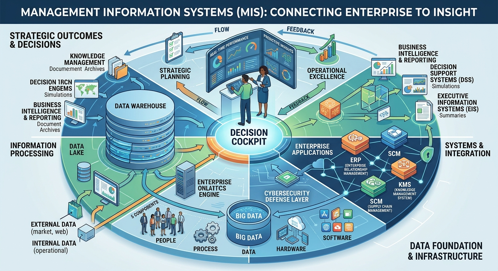

MIS & AI EthicsWebsite OverviewAlexander GonzalezOctober 27, 2026 Welcome to my website! This website will discuss MIS. artificial intelligence and cybersecurity. As we move forward, with all the technological advances, it is important that we know how data is being used in making decisions. Artificial intelligence plays such an important role in the success of business, whether it be handling information to complete simple day to day tasks. Although this might seem like all good news, it's necessary for us to understand the importance of how to use AI safely. With new AI coming out constantly, it's important that we also develop new measures for security that would protect our data. Throughout this website, you will be able to learn more about technology, ethics, and the security that comes with using AI. Welcome to our website dedicated to exploring Management Information Systems,artificial intelligence, and computer security. In today's fast-moving digital world, learning how companies use data to make smart decisions is essential for everyone. Artificial intelligence plays a huge role in business success by organizing information and completing everyday tasks much faster. However, as new technology comes out, following simple ethical rules is necessary to keep our data safe and private. Looking at current technology trends shows why we need strong security habits to protect online information from common cyber threats. We invite you to explore our pages to learn more about tech, ethics, and security.
|